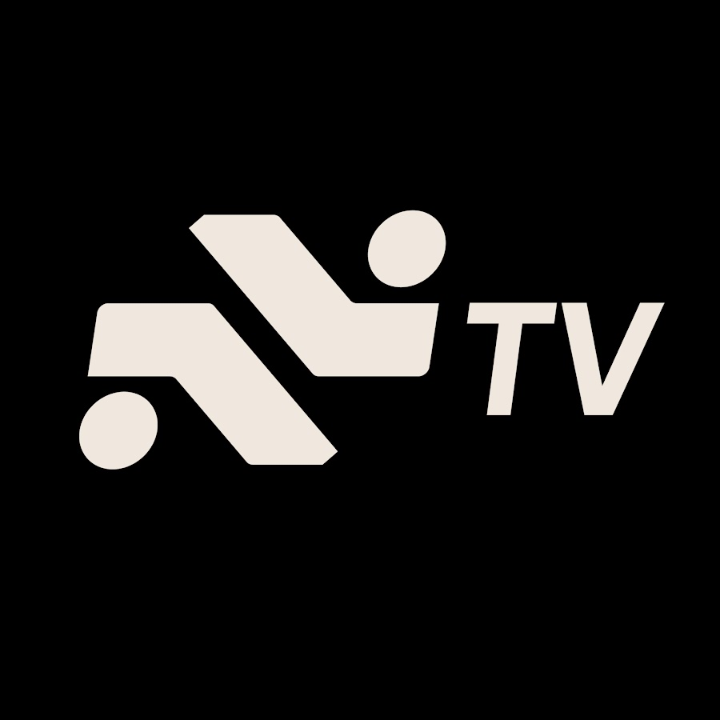

> CORE TEAM: LA MESA FIJA (DOBLE COMANDO)

LA VOZ DE ROXOM
El ancla técnica e institucional.
Un referente interno que valida las herramientas de la plataforma y aporta la data dura innegable a la mesa.
OPCIONES PARA SILLA 2: CONDUCCIÓN PERIODÍSTICA

Lara López Calvo
0

Sofía Terrile
0

Estefanía Pozzo
0

Ahorrando con Cami
0